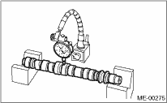
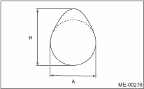

MECHANICAL(H4SO) > Camshaft
1. Measure the bend, and repair or replace if necessary.
Service limit:
0.025 mm (0.0010 in)

2. Check the journal for damage and wear. Replace if faulty.
3. Measure the outer diameter of camshaft journal and inner diameter of cylinder head journal, and confirm the difference (oil clearance) between the two values. If the oil clearance not within the limit, replace the camshaft or cylinder head as necessary.
|
Unit: mm (in) | ||||
|
Journal clearance |
Standard |
0.055 — 0.090 (0.0022 — 0.0035) | ||
|
Limit |
0.10 (0.0039) | |||
|
Camshaft journal O.D. |
31.928 — 31.945 (1.2570 — 1.2577) | |||
|
Journal hole I.D. |
32.000 — 32.018 (1.2598 — 1.2605) | |||
4. Check the cam face condition, and remove the minor faults by grinding with oil stone. Measure the cam height H. Replace if not within the limit values.
Cam height H:
|
Part |
Unit: mm (in) | |
|
Intake |
Standard |
39.485 — 39.585 (1.5545 — 1.5585) |
|
Limit |
39.385 (1.5506) | |
|
Exhaust |
Standard |
39.904 — 40.004 (1.5710 — 1.5750) |
|
Limit |
39.804 (1.5671) | |
Cam base circle diameter A:
Intake: 34.00 mm (1.3386 in)
Exhaust: 34.00 mm (1.3386 in)

5. Measure the thrust clearance of camshaft with setting the dial gauge at end of camshaft. If the thrust clearance is not within the limit value, replace the camshaft caps and cylinder head as a set. If necessary, replace the camshaft.
Standard:
0.030 — 0.090 mm (0.0012 — 0.0035 in)
Service limit:
0.1 mm (0.0039 in)